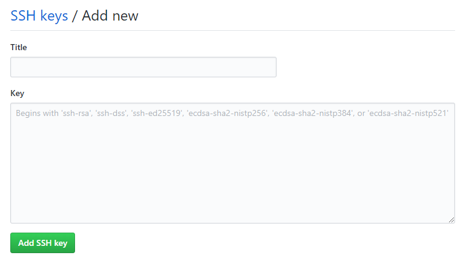

打完標題才發現GitHub的H應該要是大寫XD
創建新倉庫
登入你的Github，然後創建一個新的倉庫(New Repository)
倉庫名稱為: 你的Github用戶名.github.io
這是固定寫法!!!
安裝Git
如果你還沒安裝Git，到這裡安裝
綁定Github
輸入指令
1 | $ git config --global user.name "你的Github用戶名" |
生成密鑰
輸入指令，接下來都按Enter就好
1 | $ ssh-keygen -t rsa -C "你註冊GitHub的電子信箱" |
這裡會生成一個名為id_rsa.pub的SSH密鑰文件
主要使用非對稱加密來驗證你是否為合法用戶
不然大家都可以隨意上傳就天下大亂啦~
到Github新建SSH Key
複製Key
找到剛剛生成的id_rsa.pub(有點難找，通常在C:/Users/你的使用者名稱/.ssh底下)
把裡面的內容”全部”複製
新建SSH Key
接著到這裡點New SSH Key
進入頁面之後(如圖)

Title隨便打
Key的欄位則貼上剛剛複製的東西
然後愉快的送出~
檢查
輸入指令後，可以檢查GitHub那邊公鑰是否設置成功
1 | $ ssh git@github.com |
安裝Hexo的Git部屬套件
1 | $ npm install hexo-deployer-git |
修改配置
到部落格根目錄下的_config.yml文件，並修改為下述的樣子
1 | deploy: |
建立靜態檔案並發布
是的，最重要的發布XD
1 | $ hexo g -d |
大功告成
接著就能到 https://你的Github用戶名.github.io 看到你的成果啦~
至於更進一步想要綁定域名的話
我自己也還沒實作
之後如果有空的話會來做做看
或許也會寫一篇文章~
就請大家拭目以待了!